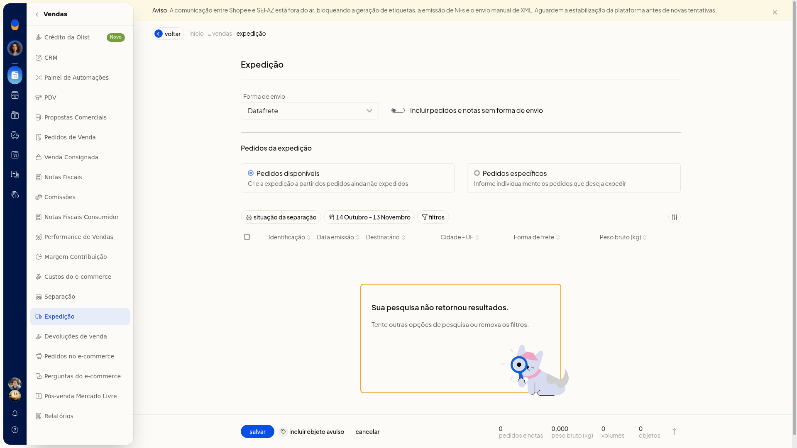

Incluir um objeto avulso na expedição
Pré-requisitos
- Tenha uma forma de envio já cadastrada para incluir a expedição.
Importante
- Um nome de destinatário sem cadastro correspondente informa que o cadastro não foi encontrado.
- Cancelar fecha só o painel do objeto avulso e não grava o objeto.
- A forma de envio do objeto acompanha a expedição.
Instruções
-
Acesse Vendas > Expedição.
-
Clique em Incluir expedição.
-
Confira a Forma de envio.

-
Clique em Incluir objeto avulso.
Dados do objeto
Nenhum campo desta parte é obrigatório.
- Informe a Descrição.
- Informe a Data no formato DD/MM/AAAA.
- Informe o Destinatário com o nome do cadastro.
Tipo e medidas
Nenhum campo desta parte é obrigatório.
- Escolha o Tipo: Envelope, Pacote/Caixa ou Rolo/Cilindro.
- Informe a Embalagem.
- Informe a Largura e o Comprimento em centímetros, com vírgula decimal.
- Informe o Peso embalagem, o Peso líquido e o Peso bruto em quilogramas, com vírgula decimal.
Frete e opções
Nenhum campo desta parte é obrigatório.
- Defina a Forma de frete, o Código de rastreio e a URL de rastreio. A URL é um endereço web.
- Defina Valor declarado, AR e Artigos perigosos como sim ou não. A forma de envio acompanha a expedição, e o volume sem pedido vinculado fica preparado dentro dela.

Resultado
O volume sem pedido vinculado fica preparado dentro da expedição.